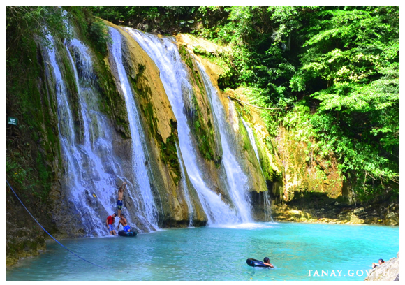

TOURISM AND ATTRACTIONS



Tanay, Rizal, is a favored destination for nature lovers and adventure seekers, boasting a wealth of natural attractions and cultural sites. Daranak Falls and Batlag Falls are among its most visited natural spots, offering stunning waterfalls and serene swimming areas. The Tinipak River and Cave feature a picturesque landscape with unique rock formations and a crystal-clear stream, ideal for trekking and spelunking. The Masungi Georeserve is a conservation area that offers a unique geotourism experience with its karst landscapes, limestone formations, and suspended trails.For those interested in cultural and historical sites, the Saint Ildefonsus of Toledo Parish Church, a centuries-old structure, provides a glimpse into the town's rich heritage. The Calinawan Cave, historically significant for its use as a hideout during World War II, is another attraction that combines history with natural beauty.Mount Daraitan is a popular destination for hikers, offering challenging trails and panoramic views of the Sierra Madre mountains and Tinipak River. For a more relaxed experience, the Pililla Wind Farm, although slightly outside Tanay, offers impressive views of giant wind turbines against the backdrop of Rizal's landscapes.
With its blend of natural beauty, adventure activities, and cultural sites, Tanay, Rizal, serves as a comprehensive destination catering to a wide array of interests and preferences.